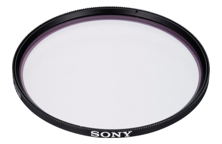

Фильтр Sony VF-67MPAM
Описание товара
67-мм фильтр высшего качества с несколькими покрытиями для камер DSLR

Характеристики товара
- Высококачественный защитный фильтр из оптического стекла с многослойным просветлением (MC)
- Защитный фильтр с многослойным просветлением для защиты объектива от пыли, грязи и отпечатков пальцев
- Фильтр может постоянно находиться на объективе для его защиты, так как не влияет на работу оптики
- Тонкий фильтр предотвращает эффект виньетирования
- Диаметр: 67 мм
- В комплект входит сумка
- Страна происхождения: Япония
Подробное описание товара
Высококачественный защитный фильтр из оптического стекла с многослойным просветлением (MC).
Защитный фильтр с многослойным просветлением для защиты объектива от пыли, грязи и отпечатков пальцев.
Фильтр может постоянно находиться на объективе для его защиты, так как не влияет на работу оптики.
Тонкий фильтр предотвращает эффект виньетирования.
Диаметр: 67 мм.
В комплект входит сумка.